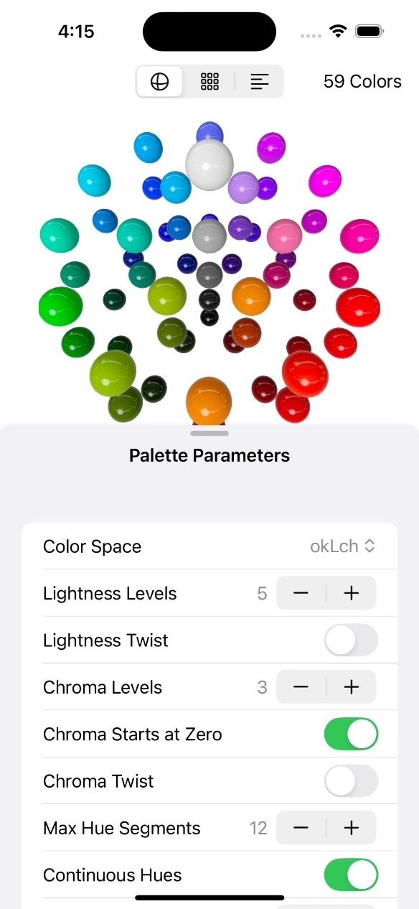

Palette Studio
Explore Colors in 3D
Palette Studio lets you explore and generate color palettes in a 3D space using advanced color models like OKLab and OKLCH.
iOS, iPadOS, visionOS


Explore Colors in 3D
Palette Studio lets you explore and generate color palettes in a 3D space using advanced color models like OKLab and OKLCH.
iOS, iPadOS, visionOS

Color space
Build palettes in OKLab and OKLCH, not in guesswork.